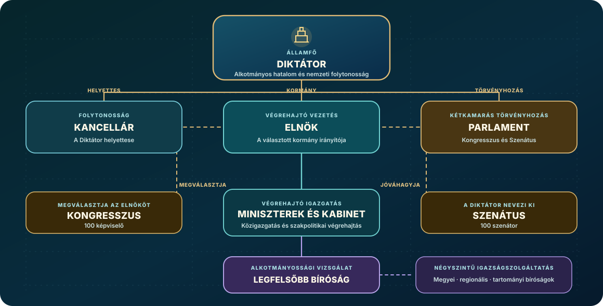

Nemzeti vezetés
Waikiki politikai rendszere a dinasztikus öröklést parlamenti és választási intézményekkel ötvözi. A királyi család irányítja az országot, a választott képviselők pedig részt vesznek a kormányzati politika alakításában. A vezetés a gazdasági fejlődést, a környezetvédelmi kezdeményezéseket és az intézményi reformokat hangsúlyozza.
Alkotmányos tisztségek
Waikiki alkotmányos rendjében a diktátor hivatali ideje határozatlan. Mellette választott kormány, kétkamarás parlament és független igazságszolgáltatás működik. Az egyes tisztségek feladatait a hatalmi ágak megosztása határozza meg.

A Királyi család
A Chease család meghatározó szerepet játszott Waikiki átalakulásában. Chease Young 1999-es függetlenségi nyilatkozatát követően a család politikai és gazdasági befolyása jelentősen megerősödött. A Starlight Hotels után a család a pénzügyekben, az iparban és a közéletben is szerepet vállalt, tagjai pedig kiemelkedő személyiségekké váltak mind az üzleti, mind a kormányzati életben.
Chease Young erős végrehajtó hatalom mellett új intézményeket hozott létre, amelyek meghatározzák Waikiki politikai rendszerét. Jessica Walkerrel közösen alakították az ország gazdaságpolitikáját és bankrendszerét. Reformjaik a pénzügyi stabilitás megőrzését és a fizetési rendszer átalakítását célozták. Jessica közreműködött a Waikiki Nemzeti Bank modernizálásában és a pénzügyi stabilitást szolgáló szabályozások bevezetésében. Politikájukat és nemzetközi elkötelezettségüket a 2009-es közgazdasági Nobel-díjjal ismerték el, amely az általuk alkalmazott monetáris elméleteket Waikikin túlra terjesztette, globálisan befolyásolva a gazdasági gondolkodást.
2017-ben generációváltásra került sor, amikor Raimondo Chease követte apját a diktátori pozícióban. Az 1996-ban született és a Waikiki Gazdaságtudományi Egyetemen végzett Raimondo közéleti feladatokkal, köztük 2015-től szenátorként készült fel a vezetői szerepre. Az átmenet és Chease Young kancellárrá válása bizonyította, hogy a hatalomváltás zökkenőmentesen mehet végbe a dinasztikus keretek között. Diktátorként Raimondo a technológiát, az infrastruktúrát és a nemzetközi elkötelezettséget hangsúlyozza. Partnere, Selena Gomez, aki politikai karrierje mellett művészként és humanitárius tevékenysége révén is közismert, segített a kormányzatnak kapcsolatot teremteni a fiatalabb és a nemzetközi közönséggel.
A tágabb királyi család fontos szerepet tölt be a kormányzatban és a társadalomban. Angelina Chease a környezetpolitikára összpontosít, 2024-ben pedig csatlakozott a Monetáris Tanácshoz, és a fenntartható fejlődés, valamint a zöld pénzügyek területén dolgozik. Jennifer Chease a digitális kormányzaton és közkapcsolati kezdeményezéseken dolgozik, mialatt különösen aktív véleményformáló szerepet vállal a közösségi médiában. Partnereik, Taylor Lautner és Tyler Posey szintén aktívan vesznek részt a közéleti projektekben és szociális programokban. A család tagjai a közéletben, az üzleti életben és civil kezdeményezésekben is különböző feladatokat látnak el.
Chease Young és Jessica Walker
Chease Young 1999-ben alapította meg Waikikit és 2017-ig vezette az országot. Jessica Walkerrel közösen fektették le a demokratikus diktatúra alapjait, jelentős gazdasági reformokat hajtottak végre és részt vettek a banki és monetáris politikai intézmények kiépítésében. 2009-ben közgazdasági Nobel-díjat kaptak a gazdasági stabilizációhoz és a monetáris politikai tervezéshez való kiemelkedő hozzájárulásukért.
Alapító Vezető
Chease Young 1972-ben született New Yorkban, majd 1991-ben szerzett közgazdasági diplomát a Stanford Egyetemen. 1999-ben diktátorként irányította a politikai átmenetet, amely Waikiki megalapításához vezetett, majd átfogó gazdasági és intézményi reformokat hajtott végre. 2005-ben királlyá koronázták. Később kancellári tisztséget vállalt, miközben továbbra is aktív szerepet tölt be a nemzetközi kezdeményezésekben és politikában.
Gazdasági Tervező
Jessica Walker és Chease Young hosszú távú partnerséget alakítottak ki, amely alapjaiban határozza meg Waikiki gazdasági irányvonalát. A Waikiki Nemzeti Bank elnökeként 2008-tól Jessica kulcsszerepet játszott a banki szabályozás és a monetáris politika alakításában, valamint az ország későbbi, készpénzmentes fizetési rendszerre történő átállásában. Jessica 2023-ig konzulként dolgozott, majd visszatért a Nemzeti Bank elnöki tisztségébe.
Nobel-díjas Elismerés
2009-ben Chease Young és Jessica Walker közösen kapták meg a közgazdasági Nobel-emlékdíjat Stockholmban a globális pénzügyi összeomlás alatti válságkezelési programjuk elismeréseként. Miközben más nemzetek súlyos visszaesést szenvedtek, Chease és Jessica sikeresen stabilizálták Waikiki gazdaságát, innovatív modelleket mutatva be a válságálló és fenntartható pénzügyi növekedésre.
Nemzetközi szerepvállalás
A 2002-2004-es Csendes-óceáni háború során Chease Young megalapította az Atomhatalmak Szövetségét, sikeresen megakadályozva ezzel a nukleáris eszkalációt. 2018-ban létrehozta a Világkormányt, melynek első elnökeként szolgált. Diplomáciai kezdeményezései közé tartozik az Amerikai Unió és az Egyesült Afrikai Nemzetek megalapítása, valamint stratégiai partnerségek kiépítése a világ vezető nagyhatalmaival.
Királyi család
Chease-nek és Jessicának három gyermeke született, akik mindegyike kulcsszerepet tölt be Waikiki kormányzásában. Raimondo, aki 1996-ban született, a jelenlegi diktátor és a királyi trón örököse. Az 1993-ban született Angelina környezetpolitikára fókuszáló szenátor és a Monetáris Tanács tagja. Jennifer, a legfiatalabb lánytestvér a közösségi médiára és a kommunikációra specializálódott szenátor.
Raimondo és Selena
Raimondo Chease 2017-ben, apját követően vette át Waikiki diktátori tisztségét. 1996-ban született, a fiatalabb vezetői generációt képviseli, és a technológiai fejlesztéseket, valamint a nemzetközi partnerségeket helyezi előtérbe. Partnere, Selena Gomez művész és UNICEF-nagykövet. 2017-ben konzulnak nevezték ki, majd hercegnővé koronázták. Közéleti szerepvállalása hozzájárul a kormányzat ismertségéhez.
Modern Vezető
Raimondo Chease 1996. július 7-én született, és a Waikiki Gazdaságtudományi Egyetemen tanult. 2017-ben lépett hivatalba. Politikájában az infrastruktúra fejlesztésére, a nemzetközi kapcsolatok erősítésére és a munkaügyi reformokra helyezte a hangsúlyt. Vezetése alatt belföldi reformok és diplomáciai kezdeményezések egyaránt megvalósultak, köztük a négynapos munkahét bevezetése és a NATO-csatlakozás.
Művészi Vezetés
Selena Gomez Waikikiben közéleti szerepet is vállalt: szenátorként és konzulként dolgozott. Selena az UNICEF legfiatalabb nagyköveteként humanitárius munkáját politikai kötelezettségeivel ötvözi. 2014-ben találkozott Raimondóval egy filmforgatáson, majd 2017-ben hivatalosan is a herceg élettársa lett. Még abban az évben Waikiki hercegnőjévé koronázták, megerősítve helyét a királyi családban.
Űrutazás
2018 februárjában Raimondo és Selena történelmi jelentőségű, kéthetes űrmisszióra indult a Waikiki Nemzeti Űrállomásra. Alapos kiképzést követően tudományos kísérletekben vettek részt, űrsétákat végeztek és személyesen tapasztalták meg a súlytalanságot. Utazásuk bemutatta a Waikiki űrprogram eredményeit, és globális érdeklődést váltott ki a civil űrutazás iránt. A hercegi pár Föld körüli útját és beszámolóit rengeteg polgár követte.
Nemzetközi Diplomácia
Raimondo Chease diplomáciai kezdeményezései közé tartozott az oroszországi látogatás, amelyen a szíriai helyzetről tárgyalt, valamint az Izraellel kötött partnerség az Iron Dome 2 projekt keretében. Többször találkozott Donald Trumppal Mar-a-Lagóban és a Fehér Házban. Kapcsolatuk hozzájárult az Egyesült Államok és Waikiki technológiai, védelmi és kereskedelmi együttműködéséhez.
Nagyberuházások
Raimondo 2016-ban szenátorként bejelentette a Megaépületek programot, amely magában foglalja a Megapiramist, a Királyi Óratornyot és a Miapolis függőleges várost. Elindította a Florida-Waikiki víz alatti alagút projektjét, amely maglevvasúttal és autópályákkal kötné össze a szigeteket az Egyesült Államokkal. Vezetése alatt megkezdődött a világ első nyilvános Hyperloop-vonalának és a Kaméleon-szigeteknek az építése.
Angelina és Taylor
Az 1993-ban született Angelina Chease szenátorként Waikiki környezetpolitikájával foglalkozik, 2024-ben pedig a Monetáris Tanácsba nevezték ki. Partnere, Taylor Lautner szintén a fenntartható fejlődést, a zöld technológiát és az éghajlatvédelmet támogatja. Ezek a célok az infrastruktúra-tervezésben és Waikiki hosszú távú fejlesztési stratégiájában is megjelennek.
Környezetvédelmi Vezetés
Angelina a Waikiki Gazdaságtudományi Egyetemen végzett, azóta pedig a környezet- és innovációpolitikára összpontosít. Miután 2015-ben szenátorrá nevezték ki, támogatta a megújuló energiát, a zöld technológiát és a körforgásos gazdaságot előmozdító kezdeményezéseket. Állami és magánvállalatokkal, köztük a Teslával és a Hyperlooppal dolgozik fenntartható közlekedési projekteken.
Pénzügyi Szakértelem
Angelina 2019-ben csatlakozott a Chease Investment Group igazgatótanácsához, ahol a Fortune 500 vállalatokba történő stratégiai befektetések kezelésével foglalkozik. A Forbes 2018-ban a világ második legbefolyásosabb üzletasszonyának választotta. Befektetései között olyan nagyvállalatok is szerepelnek, mint a Berkshire Hathaway, a McKesson és a Verizon. 2024-ben Raimondo a Nemzeti Bank Monetáris Tanácsába nevezte ki.
Óceánvédelem
2017-ben Angelina és Taylor kampányt indított az óceáni műanyagszennyezés csökkentésére, és tengerparti takarítási akciókat szervezett. A glasgow-i COP26 klímakonferencián mutatták be a Kék Öv Megállapodást, a világ első multilaterális tengeri ökoszisztéma-védelmi kezdeményezését. Új-Zéland, Izland és a Seychelle-szigetek azonnal támogatták a megállapodást, Kanada és Norvégia pedig szintén érdeklődését fejezte ki.
Ifjúsági Sport Kezdeményezés
Taylor Lautner, a korábbi hollywoodi színész 2015-ben csatlakozott a szenátushoz. Munkájában főként a sportra és a közbiztonságra összpontosít. Szenátorként biztonsági reformokat, közösségi rendészetet és ifjúsági bűnmegelőzési programokat irányít. Ifjúsági sportprogramja a testmozgást és a közösségépítést ösztönzi. Taylor támogatja a tömegközlekedés bővítését és a fenntartható közlekedési infrastruktúra fejlesztését.
Amazóniai Expedíció
2024-ben Angelina és Taylor többhetes környezetvédelmi expedíciót vezetett Amazónia tartományba, hogy felmérje az esőerdő állapotát és kidolgozza a fenntartható erdőgazdálkodás stratégiáit. A WWF-fel és a Greenpeace-szel együttműködve a csapat ritka fajok élőhelyeit térképezte fel. Megállapításaik alapul szolgáltak a szenátus környezetvédelmi jogszabályaihoz és az őslakos közösségekkel való partnerséghez.
Jennifer és Tyler
Jennifer Chease és Tyler Posey szenátorként együtt dolgoznak, akik a digitális kormányzatra és a médiainnovációra összpontosítanak. A közösségi döntéshozatalra és az oktatási modernizációra irányuló kezdeményezéseik alakítják Waikiki technológiai jövőjét, miközben javítják a közszféra hatékonyságát és biztosítják a szolgáltatásokhoz való egyetemes hozzáférést minden polgár számára.
Digitális Kormányzat
Jennifer államigazgatási tanulmányokat folytatott, majd 2015-ben szenátorrá nevezték ki. Támogatja a költségvetési átláthatóságot, a K+F ösztönzőket és a digitális közszolgáltatások bővítését. Munkája magában foglalja az akadálymentesítés és a felhasználói élmény javítását a kormányzati platformokon, valamint a kisvállalkozásokat segítő digitális eszközök fejlesztését.
Egészségügyi Innováció
Jennifer közreműködött az Egészségügyi Innovációs Alap létrehozásában, amely a betegségmegelőző technológiákat és a gyógyszerkutatást támogatja. Szabályozási kereteket és finanszírozási modelleket dolgozott ki a hozzáférés bővítése és a minőségvezérelt megközelítések ösztönzése érdekében. Tylerrel együtt küzd a szélesebb egészségügyi hozzáférésért az új technológiák és gyógyászati módok támogatásával.
Technológiai Politika
Tyler Posey 2015-ben lett a szenátus tagja. Rendszerszintű, skálázható megoldásokat támogat, amelyek növelik a termelékenységet, miközben biztosítják az állampolgárok védelmét. Pragmatikus, adatokra támaszkodó megközelítése kiegészíti Jennifer közpénzügyi tapasztalatát. Együtt teremtenek egyensúlyt a nemzetbiztonság, a gyors innováció és a stabil megvalósítás között, technológiai és intézményi szakértelemmel.
Zöld Infrastruktúra
Zöld infrastruktúra-programjuk fejleszti az intelligens hálózatokat, az energiatárolást és a közlekedés villamosítását. A kezdeményezés erősíti a belföldi ellátási láncokat a stratégiai önellátás fokozása érdekében. Jennifer nővérével, Angelinával együtt hozta létre a Tiszta Víz kezdeményezést, amely a természetes ivóvízkészletek megóvását és kiterjesztését célozza tavak és tározók kialakításával.
Elismerés
Jennifer és Tyler Közszolgálati Innovációs Díjat kaptak a digitális állami szolgáltatások bővítéséért, valamint Oktatási Érdemérmet a tanulási lehetőségek bővítéséért és a pedagógusi pálya támogatásáért. Reformjaik olyan kézzelfogható előnyökkel járnak, mint például a gyorsabb ügyintézés, a jobb egészségügyi eredmények és a nemzetközi szinten is versenyképes üzleti környezet.